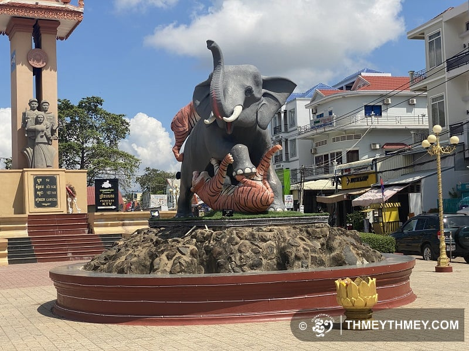

ការពិពណ៏នាអំពី ខេត្តនីមួយៗនៅក្នងប្រទេសកម្ពុជា
ទំព័រដើម
តាកែវ
ភ្នំពេញ
កែប
ព្រះសីហនុ
ស្វាយរៀង
កំពង់ធំ
បាត់ដំបង
ពោធ៏សាត់
សៀមរាប
រតនគីរី
មណ្ឌលគីរី
ក្រចេះ
ត្បូងឃ្មុំ
កំពង់ចាម
ព្រៃវែង
កណ្តាល
ឧត្តរមានជ័យ
កំពង់ឆ្នាំង
កំពង់ស្ពឺ
បន្ទាយមានជ័យ
កោះកុង
ប៉ៃលិន
កំពត
ស្ទឹងត្រែង
ព្រះវិហារ
ទំនាក់ទំនង
ខេត្តកំពង់ធំ

ព័ត៌មានសង្ខេបអំពីខេត្តកំពង់ធំ
> កំពង់ធំ (អ.ស.អ.: [kɑmpɔːŋ tʰom]) គឺជាខេត្តមួយក្នុងប្រទេសកម្ពុជា ។ វាមានព្រំប្រទល់ជាប់ខេត្តសៀមរាប នៅភាគពាយព្យ ព្រះវិហារ នៅភាគខាងជើង ស្ទឹងត្រែងនៅភាគឦសាន ក្រចេះនៅខាងកើត កំពង់ចាម កំពង់ឆ្នាំង នៅខាងត្បូង និង បឹងទន្លេសាបនៅភាគខាងលិច។ ខេត្តកំពង់ធំមានទីរួមខេត្តឈ្មោះក្រុងស្ទឹងសែន ដែលជាទីក្រុងមួយដែលមានប្រជាជន ៣០ ០០០ នាក់ មានទេសភាពដ៏ល្អប្រណីត គួរអោយចាប់ចិត្ត ស្ថិតនៅតាមបណ្តោយនៃច្រាំងដងស្ទឹងសែន។ កំពង់ធំ គឺជាខេត្ត មួយដែលស្ថិតនៅចំកណ្តាលផ្ទៃប្រទេសកម្ពុជា។ ខេត្តនេះមានផ្ទៃដីសរុប ១៣ ៨១៤ សហាតិមាត្រការ៉េ ហើយបែងចែកជា ៩ ស្រុក-ក្រុង, ៨១ ឃុំ-សង្កាត់ និង ៧៣៤ ភូមិ[២]។ ខេត្តកំពង់ធំជាខេត្តមានផ្ទៃដីធំទី២នៅក្នុងប្រទេសកម្ពុជា។ ក្រុមប្រាសាទសំបូរព្រៃគុហ៍ ដែលសរុបមានប្រមាណជិតពីររយប្រាសាទផ្សេងទៀត មានសារៈសំខាន់ណាស់សម្រាប់ការសិក្សាអំពីអារ្យធម៌ខ្មែរ មុនសម័យអង្គរ។ ក្រុមប្រាសាទទាំងនេះមានការទាក់ទាញទេសចរណ៍ និង អ្នកស្រាវជ្រាវដូចជាប្រាសាទដទៃទៀតក្នុងតំបន់អង្គរដែរ ហើយដែលត្រូវបានគេចាប់អារម្មណ៍យ៉ាងខ្លាំងនៅពេលបានទៅ ទស្សនាផ្ទាល់។ មានស្ថានីយ៍បុរាណសម័យអង្គរគួរឱ្យចាប់អារម្មណ៍ជាច្រើនក្នុងតំបន់នេះ រួមមានប្រាសាទសំបូរព្រៃគុក និង ប្រាសាទអណ្ដែត។ ជាពិសេសនៅពេលបានទៅកំសាន្តហើយៗបានស្នាក់នៅ ១ យប់ ឬ ពីរយប់ជាមួយប្រជាជននៅទីនោះ ជាពិសេសនៅភូមិកំពង់ឈើទាលនាមាត់ស្ទឹងសែន។ នោះគឺ ផ្ទះស្នាក់ របស់សហគមន៍នៅទីនោះ។ ខេត្តនេះ មានបណ្តាញផ្លូវជាតិលេខ៦ ភ្ជាប់ពី ក្រុងភ្នំពេញ ទៅ ខេត្តសៀមរាប ហើយ មានផ្លូវបំបែកទៅ ខេត្តព្រះវិហារ តាមរយៈផ្លូវជាតិលេខ៦៤ ដែលមានចម្ងាយ ១២៦ សហាតិមាត្រ។ ខេត្តកំពង់ធំជាខេត្តមួយផងដែរដែលសំបូរទៅដោយសក្តានុពលទេសចរណ៍ដើម្បីទាក់ទាញភ្ញៀវទេសចរជាតិនិងអន្ដរជាតិដូចជាការកម្រនិងអសកម្មបឹង, ទន្លេ, ព្រៃភ្នំនិងប្រាសាទបុរាណចំនួនជាង 200 ។ ក៏ជាខេត្តមួយក្នុងចំណោមខេត្តទាំងប្រាំបួនដែលមានព្រំប្រទល់ជាប់បឹងទន្លេសាបដែរ កំពង់ធំជាប៉ែកនៃឋបនីយដ្ឋានជីវមណ្ឌលបឹងទន្លេសាប។[៣]
បឹងទន្លេសាប
ខាងលិចនៃផ្នែកមួយនៃផ្លូវជាតិលេខ ៦ គ្របដណ្តប់ 30% ផ្ទៃធម្មតានេះគឺជាតំបន់ពង្រីកទៅដល់បឹងទន្លេសាប។ តំបន់នេះគឺជាការល្អសម្រាប់ការដាំដុះស្រូវនិងការនេសាទត្រីសម្រាប់គាំទ្រដល់តម្រូវការនៃខេត្តនេះនិងនាំចេញទៅទៀត
> ខេត្តកំពង់ធំ មានស្រុកចំនួន ៩ :
- ស្រុកសែនសុខ
- ស្រុកមង្គលបុរី
- ស្រុកសំរោង
- ស្រុកពញាឮ
- ស្រុកមករា
- ស្រុកបាវិត
- ស្រុកកំពង់ស្រី
- ស្រុកកំពង់ល្វា
- ស្រុកសំបួរ